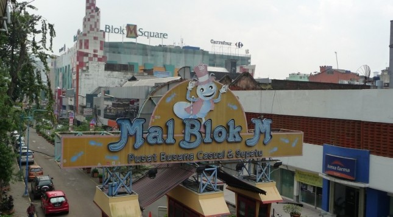

Mall
Kawasan Blok M terdapat beberapa Mall atau Pasar Modern yang dapat dikunjungi
Mal Blok M
Mal Blok M adalah mal yang unik karena terletak di bawah Terminal Bus Blok M dan dipadukan dengan taman kota. Mal yang diresmikan oleh Gubernur DKI Jakarta (Bapak Wiyogo Atmodarminto) pada tanggal 3 Oktober 1992 ini berada di sentra bisnis Jakarta Selatan dengan luas lahan 3,5 hektar dan dibangun berdasarkan program kerjasama BOT dengan Pemda DKI Jakarta. Seluruh konsep disain maupun pelaksanaan pembangunannya dikerjakan oleh putra-putri Indonesia.
Sejak tahun 2005 fasilitas Terminal Blok M semakin lengkap dengan mulai dioperasikannya Bus Transjakarta oleh Pemda DKI Jakarta, di mana Terminal Blok M merupakan tujuan awal dan akhir dari rute Bus Transjakarta koridor I (Blok M – Kota).
Tidak kurang dari 150.000 penumpang per hari menggunakan fasilitas bus di Terminal Blok M dan sebagian besar penumpang mengunjungi Mal yang unik ini setiap harinya.
Blok M Square
Blok M Square (dahulu bernama Aldiron Plaza) adalah salah satu pusat perbelanjaan yang berada di kawasan Blok M, Jakarta Selatan yang lokasinya berada di depan Terminal Blok M yang merupakan milik PD PASAR JAYA.
Blok M Squre merupakan salah satu pasar/ pusat perbelanjaan dari 153 pasar yang dimiliki PD Pasar Jaya. Pelaksanaan Pembangunan Pasar Blok dikerjasamakan oleh PD Pasar Jaya dengan PT. Melawai Jaya Reality.
Blok M Square dahulunya adalah Pasar Melawai dan Aldiron Plaza yang selalu padat pengunjung yang dikembangkan menjadi sebuah trade mall di daerah Jakarta Selatan. Dengan fasilitas yang cukup baik, menjadikan Blok M Square salah satu tempat belanja yang nyaman dan menguntungkan untuk konsumen maupun pemiliknya.
Blok M Plaza
Plaza Blok M adalah nama sebuah pusat perbelanjaan yang berada di kawasan Kebayoran Baru, Jakarta Selatan, Jakarta Selatan, Indonesia yang merupakan pusat bisnis di Jakarta Selatan. Pusat perbelanjaan yang berdiri di atas lahan bekas New Garden Hall Theatre ini telah berdiri sejak tahun 1990 dan terdiri dari tujuh lantai area shoping dan 13 lantai area parkir yang mampu menampung sekitar 700 kendaraan roda empat dan 300 kendaraan roda dua.
Plaza Blok M diresmikan oleh mendiang Ibu Tien Soeharto pada 30 Mei 1991. Plaza Blok M telah menjadi sebuah pusat perbelanjaan yang ramai dikunjungi hingga saat ini, banyak hal yang bisa dinikmati disini, mulai dari jajanan kecil hingga berbelanja pakaian untuk kerja dan keseharian.
Hingga saat ini Plaza Blok M masih terus melakukan pembenahan diri, seperti perbaikan di beberapa tempat, dari pelataran parkiran hingga interior Plaza Blok M termasuk integrasi dengan Stasiun MRT Blok M.